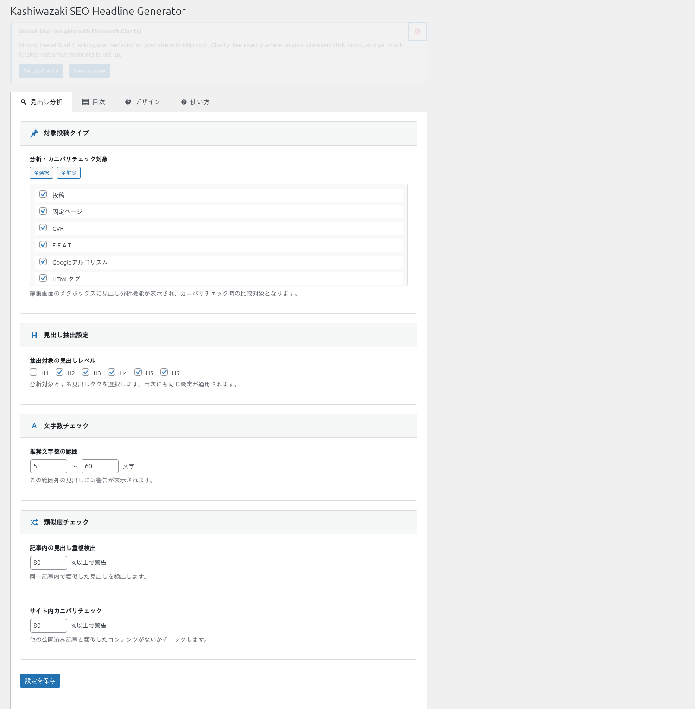

見出し分析の使い方
見出し階層の検証、コンテンツ分析（ギャップ・重複・文字数）、カニバリゼーション検出、目次（TOC）の自動生成について説明します。
見出し階層の検証
投稿の編集画面で、記事内の見出し（H1〜H6）の階層構造をリアルタイムにチェックします。階層ギャップ（例：H2の直後にH4）や重複する見出しを自動検出します。

投稿の編集画面を開くと、エディタのサイドバーまたはメタボックスに見出し分析パネルが表示されます。
記事内の見出しが階層構造として一覧表示されます。問題がある箇所にはアイコンやハイライトで警告が表示されます。
警告内容を確認し、見出しの階層を修正します。修正後、分析結果はリアルタイムに更新されます。
ヒント
SEOにおいて、見出しの階層構造は重要なシグナルです。H1→H2→H3の順序を保ち、階層をスキップしないようにしましょう。
検出される問題
| 問題の種類 | 説明 |
|---|---|
| 階層ギャップ | 見出しレベルがスキップされている場合（例：H2の直後にH4が来る場合）に警告します |
| 重複見出し | 同じテキストの見出しが複数存在する場合に警告します |
| 文字数 | 見出しの文字数が極端に長い・短い場合に情報を表示します |
自動ID付与
プラグインはフロントエンドで見出しタグ（H1〜H6）にユニークなIDを自動付与します。これにより、ページ内リンク（アンカーリンク）が自動的に利用可能になります。
| 項目 | 説明 |
|---|---|
| ID生成方式 | 見出しテキストを元にスラッグ形式のIDを自動生成します |
| 重複回避 | 同一テキストの見出しがある場合、連番サフィックスで一意性を確保します |
| 既存ID | 既にIDが付与されている見出しは上書きしません |
補足
自動付与されたIDは、検索結果にページ内ジャンプリンク（サイトリンク）として表示される可能性があります。これはSEO効果の向上に寄与します。
目次（TOC）の自動生成
設定で目次の自動挿入を有効にすると、記事の見出しからTable of Contentsが自動生成され、指定した位置に挿入されます。
設定ページで「目次の自動挿入」を有効にします。
対象となる見出しレベル（H2〜H6）と目次の挿入位置を設定します。
フロントエンドで記事を表示すると、設定に従って目次が自動挿入されます。各項目は見出しのIDへのアンカーリンクになっています。
SEOへの効果
TOCのアンカーリンクは、検索結果のサイトリンクとして表示される可能性があります。ユーザーが検索結果から直接目的のセクションにジャンプできるため、CTRの向上が期待できます。
カニバリゼーション検出
サイト全体で類似する見出しを検出し、コンテンツの重複リスクを可視化します。同じテーマの記事が複数存在する場合、検索ランキングが分散するリスクを特定できます。
設定ページでカニバリゼーション検出を有効にします。
管理画面のカニバリゼーション検出パネルで「スキャン」を実行します。サイト全体の見出しを比較分析します。
類似度の高い見出しのペアが一覧表示されます。対象の投稿へのリンクも表示されるため、コンテンツの統合や差別化を検討できます。
| 表示項目 | 説明 |
|---|---|
| 類似見出しペア | 類似度の高い見出しの組み合わせを表示します |
| 対象投稿 | 各見出しが含まれる投稿のタイトルとリンクを表示します |
| 類似度 | 見出し間の類似度スコアを表示します |
注意
カニバリゼーション検出のスキャンはAJAXで非同期に実行されます。投稿数が多いサイトではスキャンに時間がかかる場合があります。スキャン中はページを閉じないでください。
管理画面のファイルサイズ
| ファイル | サイズ |
|---|---|
| 管理画面CSS | 28KB |
| 管理画面JS | 32KB（見出し分析・カニバリ検出を含む） |
| フロントエンド出力 | 見出しID属性 + オプションTOC（HTMLのみ、外部ファイルなし） |